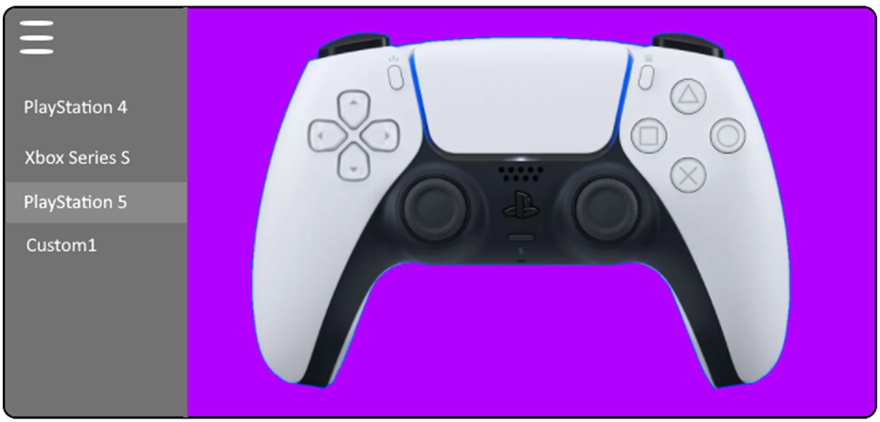

Project Idea
When coming up with my project idea, I have noticed that many gamers are having issues competing with players using a different system that has an easier control system such as a computer compared to a console. In addition, I was also passionate about helping other gamers play their favorite games and the different obstacles that could come from preventing them from playing those games. Using the combination of observations I found, the project idea that I have decided to go with is to create a customisable controller app that you change the placement of buttons and certain inputs to fit your needs. It can be linked up to many systems and computers via Bluetooth or USB cables and is primarily designed to be used to play games on multiple systems. It will also come with preset controllers like the latest Playstation and Xbox systems allowing you to have an extra controller. The controller app is universal so it can be used to save money so you don't have to constantly keep buying special equipment and can be used for when new games and systems come out. The reason for creating a project like this is to help people with severe disabilities (like losing an arm) to be able to play games. I have decided to select this as my project because I personally know a friend who is very passionate about playing online video games competitively in global tournaments but is unable to play some of his favorite games and thanks to a recent accident he fell into that caused him to be unable to use his left hand. I am hoping that more IT ideas are developed that assist those unable to perform certain actions so that everyone can be equal regardless of the decisions they make in their life.
The features of the app I came up with are designed to be as simple as using a basic text or image editor and will include similar conventions (like certain placements of buttons) to allow the user to immediately know how to start using the app with minimal effort. One other main key feature of the app that was necessary to implement was the addition of preset controllers from popular companies such as Nintendo, Playstation and Xbox being added as a default controller to the app as well as the ability to digitally modify those preset controllers to fit the users' needs. There will be a clear edit button next to a preset controller where you could move the different inputs around the screen and adjust it to your needs. You could also download controllers other people make from a community tab allowing you to share your controllers to your friends. With the approval of Playstation, Xbox and Nintendo, this will not be considered a “modded controller” as it takes existing inputs that the companies have provided and does not have any exploit allowing you to quickly switch and repeat inputs. Out of all the features, I predict that this is going to be the most used one if this gets implemented due to the large size of the gaming community and how popular consoles are among many different styles of games. If you are using this for the console, you also have the option to use other controller versions and types and mix them to the system you are playing on. (For example you can use a Playstation 3 or Xbox 360 controller on an Xbox Series X system). This is so that if users have a preferred controller they really enjoy, they can use that across every system that has been released. You can also customize your controller by changing its color and design to create a completely unique controller that you can share online or with your friends using the same mechanic as the editing input feature. This will compact the amount of button clicks and press the user will have to use when setting up their controller and simplify that app’s design to give it a modern appeal. The technologies that will be used when making this app is some sort of app design software like Swift or Android Studio in order to get the basic functions working. In addition, it requires a server to store all of the user created controllers, There will also need to be server side code to manage all of the massive data coming in from lots of users which will be coded in either PHP, SQL or JavaScript. The servers will be linked up to the initial app development code allowing users to access the server through the app and either post or download controllers that they have created. The skills required to complete this project will be experience in app development like Android Studio or Swift as well as experience in setting up a server and communication between the app and the server using SQL, PHP and JavaScript. Using one of these languages is going to be quite difficult as you need to be very cautious to produce the minimum amount of errors in order to maintain hat the server is working properly for all the users across the globe. Finding a way to communicate between the app and server as well as porting the same app to both IOS and Android will be even more of a challenge as it requires us to convert massive amounts of code into another language. If this project idea is successful, It will allow many players a more easier gaming experience and allow less conflict between different systems (such as Nintendo and Xbox) as well as allowing gamers with physical disabilities to start playing games on the same performance as a normal gamer. This app can be used as a tool for allowing people with disabilities to lead a normal life experience.